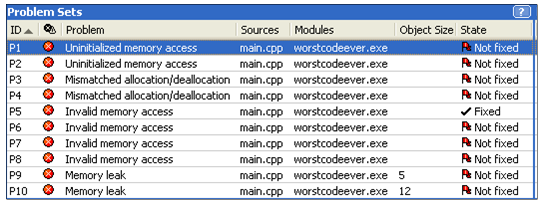
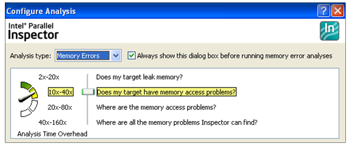
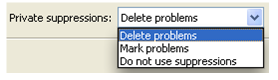

How to Avoid, Find (and Fix) Memory Errors in your C/C++ CodeBy Naveen GvNaveen Gv is a Technical Consulting Engineer in the Performance Library Lab at Intel Corporation. Memory errors occur very commonly in C and C++ applications, and they can affect application stability and correctness. These errors are due to programming bugs. They can be hard to reproduce, hard to debug, and potentially expensive to correct as well. Applications that have memory errors can experience major problems. For example, memory leaks can cause an application to run out of memory resulting in the termination of the application, gracefully or otherwise. This article helps understand challenging memory errors in serial/multithreaded applications and provides help on how to use tools to find the errors. Memory errors can be broadly classified into Heap Memory Errors and Stack Memory Errors. Some of the challenging memory errors are:
Invalid Memory AccessThis error occurs when a read or write instruction references unallocated or deallocated memory.char *pStr = (char*) malloc(25); free(pStr); strcpy(pStr, .parallel programming.); // Invalid write to deallocated memory in heap Memory leaksMemory leaks occur when memory is allocated but not released. If such leaks happen often enough and frequently enough, the leaks will eventually cause the application to run out of memory resulting in a premature termination (gracefully or as a crash).char *pStr = (char*) malloc(512); return; Mismatched Allocation/DeallocationThis error occurs when a deallocation is attempted with a function that is not the logical counterpart of the allocation function used.char *s = (char*) malloc(5); delete s;To avoid mismatched allocation/deallocation, ensure that the right deallocator is called. In C++, new[] is used for memory allocation and delete[] for freeing up. In C, malloc(), calloc() and realloc() functions are used for allocating memory while the free() function is used for freeing up allocated memory. Similarly, there are APIs in Windows programming to allocate and free memory. Missing allocationThis error occurs when freeing memory which has already been freed. This is also called "repeated free" or "double free". Example:char* pStr = (char*) malloc(20); free(pStr); free(pStr); // results in an invalid deallocation Uninitialized Memory AccessThis type of memory error will occur when an uninitialized variable is read in your application.char *pStr = (char*) malloc(512); char c = pStr[0]; // the contents of pStr were not initialized
void func()
{
int a;
int b = a * 4; // uninitialized read of variable a
}
To avoid this type of memory error, always initialize variables before using them.
Cross Stack AccessThis occurs when a thread accesses stack memory of a different thread.
main()
{
int *p;
-------
CreateThread(., thread #1, .); // Stack Owned
CreateThread(., thread #2, .);
-------
}
Thread #1
{
int q[1024];
p = q;
q[0] = 1;
}
Thread #2
{
*p = 2; // Stack Cross Accessed
}
One of the easiest ways to avoid this error is to avoid saving stack addresses to global variables.
Using tools to find memory errorsThere are many memory error checkers available on the market; I used Intel Parallel Inspector to find memory errors. This is an easy and comprehensive tool to pinpoint memory errors in both sequential and multithreaded applications.Intel Parallel Inspector integrates into Visual Studio. Parallel Inspector uses dynamic instrumentation that requires no special builds or compilers. Not all memory checkers available in the market are capable of performing analysis of threaded applications. As shown below, Parallel Inspector finds all types of memory errors and displays source, module and source line number with state of error (fixed/not fixed).  One important feature of this tool is that it allows end users to control the depth of analysis. The greater the depth of analysis, the longer the analysis takes and the more memory it uses.
 If a memory error is either not relevant or not going to be fixed, there is an option to suppress the error. Select suppressions from the configuration settings and choose the appropriate option.  ConclusionManual discovery of memory errors is very difficult in large applications. Use of the right tool to automatically detect them will help tremendously. Parallel Inspector is one of the best tools to find memory errors in serial as well as in parallel applications.Further ReadingIntel Parallel Inspector homepage |